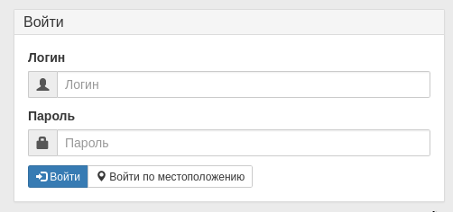

Установка:
Работа предполагается на python3.
Я предпочитаю запускать wsgi сервер на связке uWSGI + Nginx, так что ставить будем соответствующие
пакеты.
Для быстрой установки, чтоб посмотреть что из себя представляет web интерфейс биллинга, можно
воспользоваться
инстальником из install/install_debian.sh. Он установит зависимости, виртуальное окружение
python, сервер очередей
Celery, и создаст пользователя admin с паролем admin, так, что вы сразу
сможете зайти в web интерфейс под этой
учётной записью, а в последствии, если вам будет интересно, уже разбираться в детелях и тонкостях
устройства биллинга.
А ниже подробная инструкция по установке вручную, контролируя все этапы установки.
Подготовка системы
Установка происходит в debian версии 9.5.
Для начала подготовим систему, очистим и обновим пакеты. Процесс обновления долгий, так что можно
пойти
заварить себе чай :)
# dnf clean all
# dnf -y update
Затем установим зависимости, в Debian9.5 пакеты называются так:
# apt install mariadb-server libmariadb-dev libmariadbclient-dev \
mariadb-client python3-dev python3-pip python3-pil python3-venv uwsgi \
nginx uwsgi-plugin-python3 libsnmp-dev git gettext libcurl4-openssl-dev \
libssl-dev expect redis-server
Пакеты libsnmp-dev и expect нужны для управления и мониторинга оборудования,
redis-server для
сервера очередей Celery.
Условимся, что путь к папке с проектом находится по пути: /var/www/djing.
Дальше создадим каталок для web, затем создаём virtualenv, обновляем pip и ставим проект через pip:
# mkdir /var/www
# cd /var/www
# git clone --depth=1 https://github.com/nerosketch/djing.git
# python3 -m venv venv
# cd djing
# source ./venv/bin/activate
# pip3 install --upgrade pip
# export PYCURL_SSL_LIBRARY=openssl
# pip3 install -r djing/requirements.txt
# chown -R www-data:www-data /var/www/djing
# deactivate
Или, вместо этих комманд выполните инстальник из install/install_debian.sh если у вас
debian,
или по аналогии для других дистрибутивов.
Теперь давайте перейдём в баш от имени пользователя www-data, так у нас будет хватать прав на все
директории и файлы
$ sudo -u www-data -g www-data bash && cd /
Скопируем конфиг из примера в реальный:
$ cd /var/www/djing
$ cp djing/local_settings.py.example djing/local_settings.py
Затем отредактируйте конфиг для своих нужд.
В Debian использую пользователя www-data, остаётся только назначить владельца на папки:
# chown -R www-data:www-data /var/www/djing
Настройка WEB Сервера
Конфиг Nginx в папке sites-available на моём рабочем сервере выглядит примерно так как
указано
ниже, не забудьте указать в нужных местах ваш домен.
upstream djing {
server unix:///run/uwsgi/app/djing/socket;
}
# Для обращений в web серверу на localhost из скриптов
server {
listen 80;
server_name localhost 127.0.0.1;
location / {
uwsgi_pass djing;
include uwsgi_params;
}
access_log /dev/null;
error_log /dev/null;
}
# Это редирект с http на https, если у вас есть ssl сертификат
server{
listen 80;
server_name your-domain.com;
return 301 https://your-domain.com$request_uri;
}
# обработка http запросов.
server {
listen 80 default_server;
server_name <ваш домен>;
root /var/www/djing/;
charset utf-8;
location = /favicon.ico { alias /var/www/djing/static/img/favicon_m.ico; }
location = /robots.txt { alias /var/www/djing/robots.txt; }
location /media {
alias /var/www/djing/media;
expires 7d;
}
location /static {
alias /var/www/djing/static;
expires 1d;
}
location / {
uwsgi_pass djing;
include uwsgi_params;
}
}
# Обработка https запросов
server {
listen 443 ssl;
ssl on;
server_name <ваш домен> www.<ваш домен>;
ssl_certificate "/путь/к/вашему/сертификату.crt";
ssl_certificate_key "/путь/к/вашему/сертификату.key";
ssl_session_cache shared:SSL:1m;
ssl_session_timeout 5m;
ssl_ciphers HIGH:!aNULL:!MD5;
ssl_prefer_server_ciphers on;
location = /favicon.ico { alias /var/www/djing/static/img/favicon_m.ico; }
location = /robots.txt { alias /var/www/djing/robots.txt; }
location /media {
alias /var/www/djing/media;
expires 7d;
}
location /static {
alias /var/www/djing/static;
expires 1d;
}
location / {
uwsgi_pass djing;
include uwsgi_params;
}
}
Это минимальный конфиг Nginx для работы. Проверте файл /run/uwsgi/djing.sock на доступность
пользователю
www-data для чтения.
Далее настраиваем uWSGI. Мой конфиг для uWSGI в debian:
/etc/uwsgi/apps-available/djing.ini
1 [uwsgi]
2 chdir=/var/www/djing
3 module=djing.wsgi
4 master=True
5 processes=8
6 socket=/run/uwsgi/app/djing/socket
7 ;http-socket=:8000
8 chmod-socket=644
9 ;pidfile=/run/uwsgi/django-master.pid
10 vacuum=True
11 plugin=python3
12 ;disable-logging=True
13 venv=/var/www/djing/venv
А теперь попробуем запустить биллинг в полной связке Python - Uwsgi - Nginx.
Перейдём в папку биллинга, если вы вышли куда-то ещё, зайдём в баш из под пользователя www-data.
1 sudo -u www-data -g www-data bash
2 cd /var/www/djing
3 source ./venv/bin/activate
И скомпилируем переводы:
$ ./manage.py compilemessages -l ru
Попробуем запустить uwsgi и djing без Nginx, на порт 8000:
Раскомментируйте строку http-socket=:8000 в файле djing.ini, и закомментируйте
socket=/run/uwsgi/app/djing/socket и chmod-socket=644, теперь можно попробовать
запустить
# uwsgi --gid www-data --uid www-data /etc/uwsgi/apps-available/djing.ini
пробуем зайти в биллинг с браузера на <адрес сервера>:8000. Вам должен показаться диалог входа
в
систему:

Теперь, если всё прошло успешно, поменяйте в конфиге /etc/uwsgi.d/djing.ini сокет с
http-socket
на unix socket:
Раскомментируйте это:
socket=/run/uwsgi/app/djing/socket
И закомментируйте эту строку:
http-socket=:8000
Строка http-socket=:8000 была для теста, чтоб посмотреть работает-ли uwsgi сам по себе.
Теперь можно попробовать запустить nginx и uwsgi. Ставим в
djing/settings.py опцию DEBUG = False,
и пробуем запустить нужные юниты:
# systemctl start uwsgi\
# systemctl start nginx
Настраиваем биллинг
Все настройки биллинга находятся в файле djing/settings.py. Большинство опций вы можете
найти в
документации
Django settings.
Те опции, которые были добавлены мной в рамках проекта djing, описаны ниже в этом разделе
документации по установке.
djing/settings.py
USE_TZ — Это опция Django, но если вы не работаете в разных часовых
диапазонах то я не рекомендую включать
эту опцию чтоб небыло путаницы со временем. Это связано с тем что я ещё не тестировал поведение
работы
со временем при
включённой опции USE_TZ.
ALLOWED_HOSTS — Тоже опция Django, но важная для безопасности,
укажите в
списке возможные имена вашего сервера.
Подробнее в документации Django
settings.
DEFAULT_PICTURE — Это путь к изображению по умолчанию, оно используется когда
нужное изображение не найдено.
PAGINATION_ITEMS_PER_PAGE — Количество выводимых элементов списка на странце с
таблицей. Например, если поставить 30,
то на странице абонентов на одной странице будет выведено 30 строк абонентов.
DEFAULT_SNMP_PASSWORD — Пароль snmp по умолчанию для устройств, чтоб при
создании
устройства он был заполнен в нужном поле.
Если нет такого пароля то оставьте пустым или None.
TELEPHONE_REGEXP — Регулярное выражение для валидации номера телефона.
API_AUTH_SECRET — Секретное слово для безопасной передачи комманд от скриптов.
Содержимое данных можно увидеть, но нельзя изменить. Это нельзя применять для передачи паролей,
секретных номеров, но вполне подходит для защищённого управления. Безопасность гарантируется хеш
суммой
sha256. Секретное слово должен знать биллинг в конфиге, и доверенный скрипт на
примере
agent/monitoring_agent.py
Позаботьтесь о том чтоб скрипт нельзя было просто так прочитать, или вынесите секретное слово
куда-то.
Если кто-то лишний узнает
его то ваша система будет под угрозой.
API_AUTH_SUBNET — Так же применяется для авторизации скриптов, но проверяет
подсеть с которой была отправлена
комманда. Даже если скрипт будет знать секретное слово, но не будет находится в одной из доверенных
подсетей то в доступе будет отказано. Может быть строковым представлением подсети, например '127.0.0.1/8',
или списком
подсетей в строковом представлении. Можно даже передать объект который на выходе при преобразовании
в
строку
даст подсеть.
COMPANY_NAME — Название вашей компании, будет отображаться в шапке сайта в
административной части
и в личном кабинете абонента.
TELEGRAM_BOT_TOKEN — Когда вы включите оповещение через телеграм то вам сюда.
Создание БД
Подразумевается что сервер баз данных у вас уже есть, или вы его можете установить сами.
В конфиге настроить БД можно по инструкции Django databases.
Убедитесть что вы в папке с проектом, комманда pwd должна выдать
/var/www/djing.
Чтоб создать бд, как описано в документации Django admin \&
migrate,
нужно запустить ./manage.py migrate чтоб создать структуру БД. Вывод будет примерно
таким:
$ ./manage.py migrate
Operations to perform:
Apply all migrations: mapapp, contenttypes, msg_app, taskapp, accounts_app, devapp, statistics, tariff_app, admin, sessions, chatbot, auth, abonapp
Running migrations:
Rendering model states... DONE
Applying mapapp.0001_initial... OK
Applying devapp.0001_initial... OK
Applying devapp.0002_auto_20160909_1018... OK
Applying devapp.0003_device_map_dot... OK
Applying contenttypes.0001_initial... OK
...
Applying taskapp.0012_auto_20170407_0124... OK
Applying taskapp.0013_auto_20170413_1944... OK
Applying taskapp.0014_auto_20170416_1029... OK
Applying taskapp.0015_auto_20170816_1109... OK
После этого вам стоит создать супер пользователя чтоб зайти в систему.
$ ./manage.py createsuperuser
В интерактивном режиме ответьте на вопросы.
$ ./manage.py createsuperuser
Username: username
Telephone: +12223334455
Password:
Password (again):
Superuser created successfully.
Обратите внимание на то что номер телефона это обязательное поле для заполнения.
Если у вас не выходит указать номер телефона, то проверте чтоб ваш телефон соответствовал
регулярному
выражению ^(+[7,8,9,3]\d{10,11})?$.
Если регулярное выражение вам не подхожит, то вы можете изенить его в настройках, см. опции в
настройках
выше.
После изменения настроек они не сразу вступят в силу, нужно перезагрузить код django, для этого
перезапустите uwsgi:
# systemctl restart uwsgi
Теперь произведите тестовый запуск:
$ ./manage.py runserver 192.168.0.100:8000
Если не подтягивается статика то проверте чтоб опция DEBUG в настройках была
True.
При условии что адрес вашего сервера 192.168.0.100, вы сможете открыть биллинг по адресу
http://192.168.0.100:8000/.
Введите логин и пароль супер пользователя которого вы создали по инструкции выше.
Если вы успешно зашли то можно пробовать запускать биллинг в рабочую обстановку.
В настройках смените переменную DEBUG на False и перезапустите
uwsgi.
Настраиваем демоны
Если ваша система работает с поддержкой systemd то в
каталоге
systemd_units проекта вы найдёте юниты для systemd.
Скопируйте их в каталог юнитов systemd, у меня это путь /etc/systemd/system.
Настоятельно рекомендую заглянуть внутрь этих юнитов. Проверте пути исполняемых
файлов,
права и прочее.
Для запуска сервиса djing_rotate.service вам нужно сначала настроить сбор статистики
по
netflow.
Перед включением юнита djing_telebot.service создайте Telegram бота и впишите в файл djing/settings.py
в переменную TELEGRAM_BOT_TOKEN токен вашего бота.
С помощью этого бота вы будете получать различные сообщения из биллинга. Подробнее в инструкции к модулю оповещений.